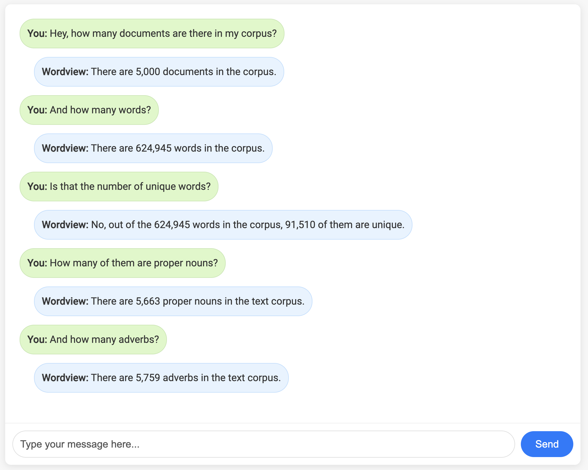

Chat with Wordview
Worldview integrates GPT-3.5-Turbo to enable the users to interact with their data and get insights from it via Natural Language. See examples of chatting with different components of Wordview below.
Chat with TextStatsPlots
After allowing Wordview to process and analyze your corpus, you can call the chat method to interact with the data and get insights from it via Natural Language.
import json
import pandas as pd
from wordview.text_analysis import TextStatsPlots
imdb_df = pd.read_csv("data/IMDB_Dataset_sample_5k.csv")
with open("wordview/chat/secrets/openai_api_key.json", "r") as f:
credentials = json.load(f)
tsp = TextStatsPlots(df=imdb_df, text_column="review")
tsp.chat(api_key=credentials.get("openai_api_key"))
The chat UI is available under http://127.0.0.1:5000/
